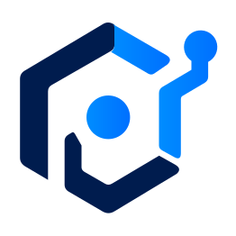

말로 만들고
스스로 고친다.
담당자가 말로 설명하면 자동화가 만들어집니다. 화면이 바뀌면 스스로 고치고, 고치지 못한 일과 쓰는 작업만 사람에게 넘깁니다.화면이 바뀌면 무엇이 왜 멈췄는지 진단해 알리고, 쓰는 작업은 언제나 사람이 승인합니다.
코딩 없이 / 사내 설치 / 쓰기 작업은 사람 승인
“해외 쇼핑몰 세 곳에서 냉장고 가격을 매일 모아 줘”
자가 치유 기록 · 화면 예시
- 09:00:11격리 시험 통과 · 반영원인 진단 · 담당자에게 알림120건 일치화면 구조 변경
- 09:00:06대체 경로 · 설계 의도 기준일시 오류 아님카드 목록진단
- 09:00:04화면 변경 감지표 없음
사람이 쓰던 화면이라면 API가 없어도 연결합니다
RPA는 지금도 멈추고, 놓치고, 늦어집니다.
규칙만 따르는 RPA의 세 가지 한계입니다.
대상 화면이 바뀌면 업무가 멈춥니다
화면, 문서 항목, DB 이름 하나만 바뀌어도 자동화가 섭니다.
예상하지 못한 상황엔 대응하지 못합니다
정해진 경로를 벗어나면 결국 사람이 다시 붙습니다.
담당자가 직접 바꿀 수 없습니다
작은 변경에도 개발자에게 맡기고 기다려야 합니다.
AI는 세 곳에만 둡니다.
모든 단계를 AI에 맡기면 같은 입력에도 결과가 달라집니다. 나머지는 규칙대로 매번 같게 돕니다.
- 작성AI가 초안을 만듭니다
- 흐름 제어규칙대로 순서를 정합니다
- 예외 판단AI가 판단합니다
- 실행실행기가 화면을 조작합니다
- 복구AI가 고치고 검증합니다AI가 원인을 진단합니다
AI가 판단규칙대로 실행
말로 설명하면 초안이 나옵니다
“세금계산서를 ERP에 넣고 메신저로 알려줘” 한 문장으로 먼저 초안을 만들고, 막힌 곳만 업무 말로 다시 묻습니다.
- 기존 도구
- “XPath를 입력하세요”
- TheOnAI
- “가격이 표시되는 위치를 화면에서 지정해 주세요”
설계 의도로 저장주고받은 문답은 함께 저장되어, 화면이 바뀌었을 때 고치는 근거가 됩니다.

(주)한빛상사 세금계산서 1,240만 원 기입이 승인을 기다립니다.
- 공급가액
- ₩12,400,000
- 거래처
- (주)한빛상사
- 승인 기준
- ERP 기입은 쓰는 작업
AI가 판단해도, 쓰는 작업은 사람이 승인합니다
쓰는 단계에는 승인이 자동으로 들어갑니다. 요청은 메신저로 알리고, 승인은 에디터에서 합니다.
- 자동 진행
- 조회·수집처럼 되돌릴 수 있는 일
- 사람 승인
- 기입·전송·결제처럼 되돌리기 어려운 일
금액 상한·거래처 같은 검사 규칙도 업무에 맞게 더합니다.
AI 모델을 바꾸기 전에 같은 시험지로 먼저 채점합니다
업무별 정답 문제로 새 모델을 먼저 채점하고, 점수를 보고 바꿀지 정합니다. 만들어 둔 업무 흐름은 그대로입니다.
가장 귀찮은 그 업무, 오늘 TheOnAI에게 넘기세요.
고치는 것보다
검증이 먼저입니다.
모든 수정은 격리된 환경에서 먼저 시험합니다.지금은 무엇이 왜 실패했는지 분류해 알립니다. 격리 시험을 거치는 자동 수정은 준비하고 있습니다.
사람이 쓰던 화면 그대로
웹은 구조로 읽고, 구조가 보이지 않는 데스크톱·레거시 화면은 눈으로 봅니다.웹은 구조로 읽어 다룹니다. 구조가 보이지 않는 데스크톱·레거시 화면을 눈으로 보는 방식은 준비하고 있습니다.

AI가 들어가도 예측할 수 있게
아래 네 가지는 프레임워크가 강제합니다.
- 권한 선언
- 단계마다 읽기·쓰기 여부를 미리 밝힙니다.
- 승인
- 되돌리기 어려운 작업은 사람이 승인합니다.
- 중복 방지
- 두 번 실행돼도 두 번 입력되지 않습니다.
- 감사 기록
- AI가 무엇을 보고 판단했는지 원문으로 남습니다.
가장 위험한 실패는 멈추는 것이 아닙니다
화면이 다 바뀌기 전에 표를 읽으면, 직전 화면의 데이터를 읽고도 오류 없이 성공으로 남습니다.
- 상태
- 성공
- 읽은 행
- 100
- 오류
- 0건
읽은 것은 직전 화면의 데이터였습니다.
- 기존 도구가 보는 것
- 실행했는가, 오류가 났는가
- TheOnAI가 더 보는 것
- 결과가 원래 의도와 맞는가
화면이 바뀌면 이렇게 고칩니다
- 감지
실행 실패, 화면 변화, 결과 불일치를 알아챕니다.
- 진단
일시 오류는 다시 시도하고, 화면 변경은 따로 가려냅니다.
- 대체 경로설계 의도
저장한 의도를 근거로 새 경로를 찾습니다.
- 격리 시험
따로 돌려 의도대로인지 확인합니다. 실패하면 사람에게 넘깁니다.
- 반영
조회는 바로 반영하고, 쓰는 작업은 승인을 거칩니다.
- 이력
수정 전후를 남기고 언제든 되돌립니다.
만드는 데 12시간,
유지보수는 85% 적게.
한 칸이 1시간, 기존 80시간 중 12시간입니다.
1 복합 스크래핑·정규화 시나리오를 자체 PoC로 시뮬레이션한 기준
한 칸이 기존 공수의 1%, 15칸만 남습니다.
2 자가 치유 적용 전후를 자체 테스트베드에서 비교한 기준
도입 1년 ROI 목표 300%3
3 개발 외주 비용 절감과 시스템 중단 시간 단축 효과로 산출한 목표치
이런 업무부터 맡깁니다
“냉장고 가격 비교” 한마디로 여러 사이트의 가격을 모아 한 표로 맞춥니다.
자연어 초안구조가 자주 바뀌는 사이트에서도 스스로 경로를 고쳐 표와 기사를 모읍니다.구조가 자주 바뀌는 사이트에서 표와 기사를 모으고, 구조가 바뀌면 무엇이 달라졌는지 진단해 알립니다.
자가 치유메일로 받은 세금계산서를 ERP에 기입하고, 같은 건은 두 번 넣지 않습니다.
승인 · 중복 방지도입 전에
많이 묻는 것들.
여기 없는 질문은 상담에서 답해 드립니다.
개발자 없이 쓸 수 있나요?
네. 하려는 일을 말로 설명하면 초안이 만들어지고, 모호한 부분만 업무 말로 다시 묻습니다.
AI가 잘못 고치면 어떻게 되나요?
고친 경로는 격리된 환경에서 먼저 돌려 보고 의도대로일 때만 반영합니다. 고치지 못하거나 쓰는 작업이 실패하면 사람에게 넘기고, 수정 이력이 남아 언제든 되돌릴 수 있습니다.지금은 무엇이 왜 실패했는지 분류해 알리고, 고치는 일은 사람이 확인합니다. 격리 시험을 거치는 자동 수정은 준비하고 있습니다.
같은 건이 두 번 처리되지 않나요?
쓰는 작업마다 고유 키를 붙여 같은 작업이 다시 실행되면 거부합니다. AI가 재시도해도 전표와 메일은 한 번만 처리됩니다.
어떤 화면까지 자동화할 수 있나요?
웹은 구조(DOM)로, 데스크톱 앱이나 레거시 화면은 화면 인식(Vision)으로 다룹니다. API가 없어도 연결됩니다.웹은 구조(DOM)로 다루고, API가 없어도 연결됩니다. 데스크톱 앱이나 레거시 화면을 화면 인식(Vision)으로 다루는 방식은 준비하고 있습니다.
회사 서버에 설치할 수 있나요?
네. 고객사 서버에 설치해 업무 시스템에 사내에서 바로 접근합니다. AI 모델을 바꿔도 만들어 둔 업무 흐름은 그대로입니다.
AI가 내린 판단을 나중에 확인할 수 있나요?
AI와 주고받은 내용, 봇의 입력과 출력이 원문으로 남습니다. 실행 번호 하나로 처음부터 끝까지 따라가고, 어느 판단이 AI였는지 가려낼 수 있습니다.
비용은 어떻게 정해지나요?
라이선스 방식입니다. 설치 환경과 업무 범위를 상담에서 듣고 견적을 드립니다.
도입은 어떻게 시작하나요?
자동화할 업무 하나를 정해 상담을 신청하세요. 그 업무로 PoC를 해 보고 도입을 결정합니다.

담당자가 스스로 만들고, 스스로 고치는 자동화.
- 모든 실행은 기록으로 남습니다
- 쓰기 작업은 언제나 사람 승인
- 고객사 서버에 설치합니다
가장 귀찮은 업무부터 맡기세요.
업무 하나로 PoC를 해, 실제로 돌아가는 것부터 보여 드립니다.